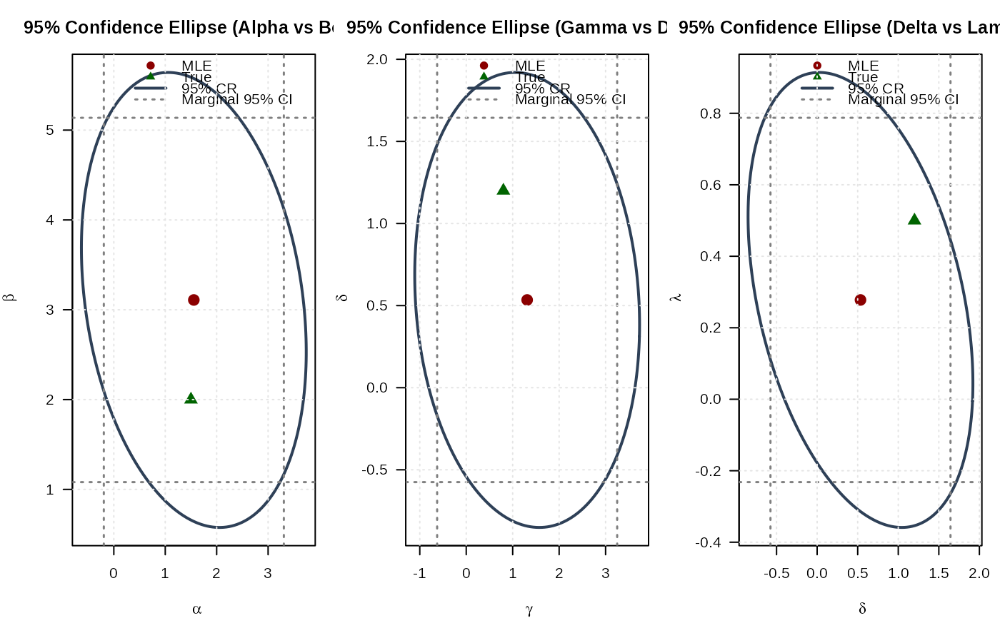

Hessian Matrix of the Negative Log-Likelihood for the GKw Distribution
Source:R/RcppExports.R
hsgkw.RdComputes the analytic Hessian matrix (matrix of second partial derivatives) of the negative log-likelihood function for the five-parameter Generalized Kumaraswamy (GKw) distribution. This is typically used to estimate standard errors of maximum likelihood estimates or in optimization algorithms.
Arguments
- par
A numeric vector of length 5 containing the distribution parameters in the order:
alpha(\(\alpha > 0\)),beta(\(\beta > 0\)),gamma(\(\gamma > 0\)),delta(\(\delta \ge 0\)),lambda(\(\lambda > 0\)).- data
A numeric vector of observations. All values must be strictly between 0 and 1 (exclusive).
Value
Returns a 5x5 numeric matrix representing the Hessian matrix of the
negative log-likelihood function, i.e., the matrix of second partial
derivatives \(-\partial^2 \ell / (\partial \theta_i \partial \theta_j)\).
Returns a 5x5 matrix populated with NaN if any parameter values are
invalid according to their constraints, or if any value in data is
not in the interval (0, 1).
Details
This function calculates the analytic second partial derivatives of the
negative log-likelihood function based on the GKw PDF (see dgkw).
The log-likelihood function \(\ell(\theta | \mathbf{x})\) is given by:
$$
\ell(\theta) = n \ln(\lambda\alpha\beta) - n \ln B(\gamma, \delta+1)
+ \sum_{i=1}^{n} [(\alpha-1) \ln(x_i)
+ (\beta-1) \ln(v_i)
+ (\gamma\lambda - 1) \ln(w_i)
+ \delta \ln(z_i)]
$$
where \(\theta = (\alpha, \beta, \gamma, \delta, \lambda)\), \(B(a,b)\)
is the Beta function (beta), and intermediate terms are:
\(v_i = 1 - x_i^{\alpha}\)
\(w_i = 1 - v_i^{\beta} = 1 - (1-x_i^{\alpha})^{\beta}\)
\(z_i = 1 - w_i^{\lambda} = 1 - [1-(1-x_i^{\alpha})^{\beta}]^{\lambda}\)
The Hessian matrix returned contains the elements \(- \frac{\partial^2 \ell(\theta | \mathbf{x})}{\partial \theta_i \partial \theta_j}\).
Key properties of the returned matrix:
Dimensions: 5x5.
Symmetry: The matrix is symmetric.
Ordering: Rows and columns correspond to the parameters in the order \(\alpha, \beta, \gamma, \delta, \lambda\).
Content: Analytic second derivatives of the negative log-likelihood.
The exact analytical formulas for the second derivatives are implemented directly (often derived using symbolic differentiation) for accuracy and efficiency, typically using C++.
References
Cordeiro, G. M., & de Castro, M. (2011). A new family of generalized distributions. Journal of Statistical Computation and Simulation
Kumaraswamy, P. (1980). A generalized probability density function for double-bounded random processes. Journal of Hydrology, 46(1-2), 79-88.
Examples
# \donttest{
## Example 1: Basic Hessian Evaluation
# Generate sample data
set.seed(2323)
n <- 1000
true_params <- c(alpha = 1.5, beta = 2.0, gamma = 0.8, delta = 1.2, lambda = 0.5)
data <- rgkw(n, alpha = true_params[1], beta = true_params[2],
gamma = true_params[3], delta = true_params[4],
lambda = true_params[5])
# Evaluate Hessian at true parameters
hess_true <- hsgkw(par = true_params, data = data)
cat("Hessian matrix at true parameters:\n")
#> Hessian matrix at true parameters:
print(hess_true, digits = 4)
#> [,1] [,2] [,3] [,4] [,5]
#> [1,] 1151.3 -223.17 1494.9 -363.7 2991.8
#> [2,] -223.2 81.76 -232.3 118.9 -503.5
#> [3,] 1494.9 -232.35 1904.5 -394.9 3895.1
#> [4,] -363.7 118.90 -394.9 178.0 -838.3
#> [5,] 2991.8 -503.54 3895.1 -838.3 7494.0
# Check symmetry
cat("\nSymmetry check (max |H - H^T|):",
max(abs(hess_true - t(hess_true))), "\n")
#>
#> Symmetry check (max |H - H^T|): 0
## Example 2: Hessian Properties at MLE
# Fit model
fit <- optim(
par = c(1.2, 2.0, 0.5, 1.5, 0.2),
fn = llgkw,
gr = grgkw,
data = data,
method = "Nelder-Mead",
hessian = TRUE,
control = list(
maxit = 2000,
factr = 1e-15,
pgtol = 1e-15,
trace = FALSE
)
)
mle <- fit$par
names(mle) <- c("alpha", "beta", "gamma", "delta", "lambda")
# Hessian at MLE
hessian_at_mle <- hsgkw(par = mle, data = data)
cat("\nHessian at MLE:\n")
#>
#> Hessian at MLE:
print(hessian_at_mle, digits = 4)
#> [,1] [,2] [,3] [,4] [,5]
#> [1,] 1015.9 -127.58 819.93 -604.1 4306.7
#> [2,] -127.6 31.57 -80.71 119.0 -433.1
#> [3,] 819.9 -80.71 700.52 -420.2 3656.0
#> [4,] -604.1 118.96 -420.20 486.9 -2238.2
#> [5,] 4306.7 -433.11 3655.96 -2238.2 19117.5
# Compare with optim's numerical Hessian
cat("\nComparison with optim Hessian:\n")
#>
#> Comparison with optim Hessian:
cat("Max absolute difference:",
max(abs(hessian_at_mle - fit$hessian)), "\n")
#> Max absolute difference: 0.2576065
# Eigenvalue analysis
eigenvals <- eigen(hessian_at_mle, only.values = TRUE)$values
cat("\nEigenvalues:\n")
#>
#> Eigenvalues:
print(eigenvals)
#> [1] 2.106856e+04 2.806373e+02 1.660194e+00 9.013023e-01 6.584820e-01
cat("\nPositive definite:", all(eigenvals > 0), "\n")
#>
#> Positive definite: TRUE
cat("Condition number:", max(eigenvals) / min(eigenvals), "\n")
#> Condition number: 31995.65
## Example 3: Standard Errors and Confidence Intervals
# Observed information matrix
obs_info <- hessian_at_mle
# Variance-covariance matrix
vcov_matrix <- solve(obs_info)
cat("\nVariance-Covariance Matrix:\n")
#>
#> Variance-Covariance Matrix:
print(vcov_matrix, digits = 6)
#> [,1] [,2] [,3] [,4] [,5]
#> [1,] 0.7976392 -0.2111590 0.0877811 0.4153406 -0.1526331
#> [2,] -0.2111590 1.0707453 0.2160549 -0.4263221 -0.0194034
#> [3,] 0.0877811 0.2160549 0.9776437 -0.0606497 -0.2089422
#> [4,] 0.4153406 -0.4263221 -0.0606497 0.3204520 -0.0541086
#> [5,] -0.1526331 -0.0194034 -0.2089422 -0.0541086 0.0676199
# Standard errors
se <- sqrt(diag(vcov_matrix))
names(se) <- c("alpha", "beta", "gamma", "delta", "lambda")
# Correlation matrix
corr_matrix <- cov2cor(vcov_matrix)
cat("\nCorrelation Matrix:\n")
#>
#> Correlation Matrix:
print(corr_matrix, digits = 4)
#> [,1] [,2] [,3] [,4] [,5]
#> [1,] 1.0000 -0.22849 0.0994 0.8215 -0.65722
#> [2,] -0.2285 1.00000 0.2112 -0.7278 -0.07211
#> [3,] 0.0994 0.21117 1.0000 -0.1084 -0.81264
#> [4,] 0.8215 -0.72780 -0.1084 1.0000 -0.36758
#> [5,] -0.6572 -0.07211 -0.8126 -0.3676 1.00000
# Confidence intervals
z_crit <- qnorm(0.975)
results <- data.frame(
Parameter = c("alpha", "beta", "gamma", "delta", "lambda"),
True = true_params,
MLE = mle,
SE = se,
CI_Lower = mle - z_crit * se,
CI_Upper = mle + z_crit * se
)
print(results, digits = 4)
#> Parameter True MLE SE CI_Lower CI_Upper
#> alpha alpha 1.5 1.5556 0.8931 -0.1948 3.3061
#> beta beta 2.0 3.1089 1.0348 1.0808 5.1370
#> gamma gamma 0.8 1.3114 0.9888 -0.6265 3.2494
#> delta delta 1.2 0.5344 0.5661 -0.5751 1.6439
#> lambda lambda 0.5 0.2778 0.2600 -0.2319 0.7875
## Example 4: Determinant and Trace Analysis
# Compute at different points
test_params <- rbind(
c(1.5, 2.5, 1.2, 1.5, 1.5),
c(2.0, 3.0, 1.5, 2.0, 1.8),
mle,
c(2.5, 3.5, 1.8, 2.5, 2.0)
)
hess_properties <- data.frame(
Alpha = numeric(),
Beta = numeric(),
Gamma = numeric(),
Delta = numeric(),
Lambda = numeric(),
Determinant = numeric(),
Trace = numeric(),
Min_Eigenval = numeric(),
Max_Eigenval = numeric(),
Cond_Number = numeric(),
stringsAsFactors = FALSE
)
for (i in 1:nrow(test_params)) {
H <- hsgkw(par = test_params[i, ], data = data)
eigs <- eigen(H, only.values = TRUE)$values
hess_properties <- rbind(hess_properties, data.frame(
Alpha = test_params[i, 1],
Beta = test_params[i, 2],
Gamma = test_params[i, 3],
Delta = test_params[i, 4],
Lambda = test_params[i, 5],
Determinant = det(H),
Trace = sum(diag(H)),
Min_Eigenval = min(eigs),
Max_Eigenval = max(eigs),
Cond_Number = max(eigs) / min(eigs)
))
}
cat("\nHessian Properties at Different Points:\n")
#>
#> Hessian Properties at Different Points:
print(hess_properties, digits = 4, row.names = FALSE)
#> Alpha Beta Gamma Delta Lambda Determinant Trace Min_Eigenval Max_Eigenval
#> 1.500 2.500 1.200 1.5000 1.5000 3.379e+15 3357 -3370.0013 8989
#> 2.000 3.000 1.500 2.0000 1.8000 8.321e+15 2282 -4797.5735 10666
#> 1.556 3.109 1.311 0.5344 0.2778 5.826e+06 21352 0.6585 21069
#> 2.500 3.500 1.800 2.5000 2.0000 1.311e+16 1729 -6018.0712 12386
#> Cond_Number
#> -2.667
#> -2.223
#> 31995.650
#> -2.058
## Example 5: Curvature Visualization (Alpha vs Beta)
xd <- 2
# Create grid around MLE
alpha_grid <- seq(mle[1] - xd, mle[1] + xd, length.out = round(n/4))
beta_grid <- seq(mle[2] - xd, mle[2] + xd, length.out = round(n/4))
alpha_grid <- alpha_grid[alpha_grid > 0]
beta_grid <- beta_grid[beta_grid > 0]
# Compute curvature measures
determinant_surface <- matrix(NA, nrow = length(alpha_grid),
ncol = length(beta_grid))
trace_surface <- matrix(NA, nrow = length(alpha_grid),
ncol = length(beta_grid))
for (i in seq_along(alpha_grid)) {
for (j in seq_along(beta_grid)) {
H <- hsgkw(c(alpha_grid[i], beta_grid[j], mle[3], mle[4], mle[5]), data)
determinant_surface[i, j] <- det(H)
trace_surface[i, j] <- sum(diag(H))
}
}
# Plot
par(mfrow = c(1, 2), mar = c(4, 4, 3, 1))
contour(alpha_grid, beta_grid, determinant_surface,
xlab = expression(alpha), ylab = expression(beta),
main = "Hessian Determinant", las = 1,
col = "#2E4057", lwd = 1.5, nlevels = 15)
points(mle[1], mle[2], pch = 19, col = "#8B0000", cex = 1.5)
points(true_params[1], true_params[2], pch = 17, col = "#006400", cex = 1.5)
grid(col = "gray90")
contour(alpha_grid, beta_grid, trace_surface,
xlab = expression(alpha), ylab = expression(beta),
main = "Hessian Trace", las = 1,
col = "#2E4057", lwd = 1.5, nlevels = 15)
points(mle[1], mle[2], pch = 19, col = "#8B0000", cex = 1.5)
points(true_params[1], true_params[2], pch = 17, col = "#006400", cex = 1.5)
grid(col = "gray90")
par(mfrow = c(1, 1))
## Example 6: Confidence Ellipse (Alpha vs Beta)
# Extract 2x2 submatrix for alpha and beta
vcov_2d <- vcov_matrix[1:2, 1:2]
# Create confidence ellipse
theta <- seq(0, 2 * pi, length.out = round(n/4))
chi2_val <- qchisq(0.95, df = 2)
eig_decomp <- eigen(vcov_2d)
ellipse <- matrix(NA, nrow = round(n/4), ncol = 2)
for (i in 1:round(n/4)) {
v <- c(cos(theta[i]), sin(theta[i]))
ellipse[i, ] <- mle[1:2] + sqrt(chi2_val) *
(eig_decomp$vectors %*% diag(sqrt(eig_decomp$values)) %*% v)
}
# Marginal confidence intervals
se_2d <- sqrt(diag(vcov_2d))
ci_alpha <- mle[1] + c(-1, 1) * 1.96 * se_2d[1]
ci_beta <- mle[2] + c(-1, 1) * 1.96 * se_2d[2]
# Plot
par(mfrow = c(1, 3), mar = c(4, 4, 3, 1))
plot(ellipse[, 1], ellipse[, 2], type = "l", lwd = 2, col = "#2E4057",
xlab = expression(alpha), ylab = expression(beta),
main = "95% Confidence Ellipse (Alpha vs Beta)", las = 1)
# Add marginal CIs
abline(v = ci_alpha, col = "#808080", lty = 3, lwd = 1.5)
abline(h = ci_beta, col = "#808080", lty = 3, lwd = 1.5)
points(mle[1], mle[2], pch = 19, col = "#8B0000", cex = 1.5)
points(true_params[1], true_params[2], pch = 17, col = "#006400", cex = 1.5)
legend("topright",
legend = c("MLE", "True", "95% CR", "Marginal 95% CI"),
col = c("#8B0000", "#006400", "#2E4057", "#808080"),
pch = c(19, 17, NA, NA),
lty = c(NA, NA, 1, 3),
lwd = c(NA, NA, 2, 1.5),
bty = "n")
grid(col = "gray90")
## Example 7: Confidence Ellipse (Gamma vs Delta)
# Extract 2x2 submatrix for gamma and delta
vcov_2d_gd <- vcov_matrix[3:4, 3:4]
# Create confidence ellipse
eig_decomp_gd <- eigen(vcov_2d_gd)
ellipse_gd <- matrix(NA, nrow = round(n/4), ncol = 2)
for (i in 1:round(n/4)) {
v <- c(cos(theta[i]), sin(theta[i]))
ellipse_gd[i, ] <- mle[3:4] + sqrt(chi2_val) *
(eig_decomp_gd$vectors %*% diag(sqrt(eig_decomp_gd$values)) %*% v)
}
# Marginal confidence intervals
se_2d_gd <- sqrt(diag(vcov_2d_gd))
ci_gamma <- mle[3] + c(-1, 1) * 1.96 * se_2d_gd[1]
ci_delta <- mle[4] + c(-1, 1) * 1.96 * se_2d_gd[2]
# Plot
# par(mar = c(4, 4, 3, 1))
plot(ellipse_gd[, 1], ellipse_gd[, 2], type = "l", lwd = 2, col = "#2E4057",
xlab = expression(gamma), ylab = expression(delta),
main = "95% Confidence Ellipse (Gamma vs Delta)", las = 1)
# Add marginal CIs
abline(v = ci_gamma, col = "#808080", lty = 3, lwd = 1.5)
abline(h = ci_delta, col = "#808080", lty = 3, lwd = 1.5)
points(mle[3], mle[4], pch = 19, col = "#8B0000", cex = 1.5)
points(true_params[3], true_params[4], pch = 17, col = "#006400", cex = 1.5)
legend("topright",
legend = c("MLE", "True", "95% CR", "Marginal 95% CI"),
col = c("#8B0000", "#006400", "#2E4057", "#808080"),
pch = c(19, 17, NA, NA),
lty = c(NA, NA, 1, 3),
lwd = c(NA, NA, 2, 1.5),
bty = "n")
grid(col = "gray90")
## Example 8: Confidence Ellipse (Delta vs Lambda)
# Extract 2x2 submatrix for delta and lambda
vcov_2d_dl <- vcov_matrix[4:5, 4:5]
# Create confidence ellipse
eig_decomp_dl <- eigen(vcov_2d_dl)
ellipse_dl <- matrix(NA, nrow = round(n/4), ncol = 2)
for (i in 1:round(n/4)) {
v <- c(cos(theta[i]), sin(theta[i]))
ellipse_dl[i, ] <- mle[4:5] + sqrt(chi2_val) *
(eig_decomp_dl$vectors %*% diag(sqrt(eig_decomp_dl$values)) %*% v)
}
# Marginal confidence intervals
se_2d_dl <- sqrt(diag(vcov_2d_dl))
ci_delta_2 <- mle[4] + c(-1, 1) * 1.96 * se_2d_dl[1]
ci_lambda <- mle[5] + c(-1, 1) * 1.96 * se_2d_dl[2]
# Plot
par(mar = c(4, 4, 3, 1))
plot(ellipse_dl[, 1], ellipse_dl[, 2], type = "l", lwd = 2, col = "#2E4057",
xlab = expression(delta), ylab = expression(lambda),
main = "95% Confidence Ellipse (Delta vs Lambda)", las = 1)
# Add marginal CIs
abline(v = ci_delta_2, col = "#808080", lty = 3, lwd = 1.5)
abline(h = ci_lambda, col = "#808080", lty = 3, lwd = 1.5)
points(mle[4], mle[5], pch = 19, col = "#8B0000", cex = 1.5)
points(true_params[4], true_params[5], pch = 17, col = "#006400", cex = 1.5)
legend("topright",
legend = c("MLE", "True", "95% CR", "Marginal 95% CI"),
col = c("#8B0000", "#006400", "#2E4057", "#808080"),
pch = c(19, 17, NA, NA),
lty = c(NA, NA, 1, 3),
lwd = c(NA, NA, 2, 1.5),
bty = "n")
grid(col = "gray90")

# }